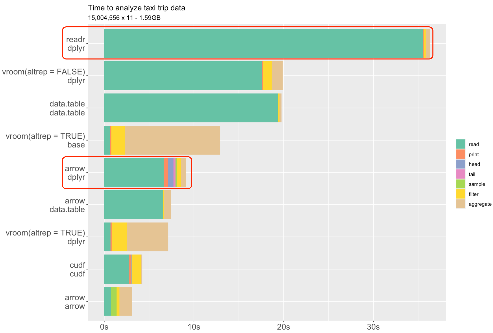

import numpy as np
import pandas as pd
import matplotlib.pyplot as pltData Importing
MATH/COSC 3570 Introduction to Data Science


DBI, jsonline, xml2, httr
R Data Importing
- There are tons of packages and tools out there, and there are lots of data file formats too.
- Due to time limit, we will just cover commonly used tools and data file formats. And I think that should be enough for you to do your own project.
- If you really need to import a data set that is stored in a very weird format, let me know. And we’ll see how to solve this problem, maybe transform the format into another format. OK.
- Here are the packages related to reading and writing files. We’ll talk about some of them today.
Rectangular Data
readr 📦 Functions
| Function | Format | Typical suffix |
|---|---|---|
read_table() |
white space separated values | txt |
read_csv() |
comma separated values | csv |
read_csv2() |
semicolon separated values | csv |
read_tsv() |
tab delimited separated values | tsv |
read_fwf() |
fixed width files | txt |
read_delim() |
general text file format, must define delimiter | txt |
. . .
Be careful: The suffix usually tells us what type of file it is, but no guarantee that these always match.
readr::read_lines("./data/murders.csv", n_max = 3) ## there is a header[1] "state,abb,region,population,total" "Alabama,AL,South,4779736,135"
[3] "Alaska,AK,West,710231,19" - readr provides the following functions to read your data into R.
- Be careful: The suffix usually tells us what type of file it is, but no guarantee that these always match.
- If you don’t want to open your data file, you can read several lines of your data in R using the function read_lines().
- For example, I check the first three lines of the murders.csv file. And yes, it is a comma-separated-value or csv file.
- Fixed width text files are special cases of text files where the format is specified by column widths, pad character and left/right alignment. Column widths are measured in units of characters. For example, if you have data in a text file where the first column always has exactly 10 characters, and the second column has exactly 5, the third has exactly 12 (and so on), this would be categorized as a fixed width text file.
Reading Data
read_csv() prints out a column specification giving us delimiter, name and type of each column.
murders_csv <- read_csv(file = "./data/murders.csv")
# Rows: 51 Columns: 5
# ── Column specification ─────────────
# Delimiter: ","
# chr (3): state, abb, region
# dbl (2): population, total
head(murders_csv)# A tibble: 6 × 5
state abb region population total
<chr> <chr> <chr> <dbl> <dbl>
1 Alabama AL South 4779736 135
2 Alaska AK West 710231 19
3 Arizona AZ West 6392017 232
4 Arkansas AR South 2915918 93
5 California CA West 37253956 1257
6 Colorado CO West 5029196 65## View data in RStudio
view(murders_csv)- OK. Let’s try to read the murders.csv file into R. We use read_csv(), and in the first argument, we tell R its file path. Your path is generally not the same as my path, so you get to change it to your path.
- When we run
read_csv(), it prints out a column specification that gives the name and type of each column.
Missing Values
Which type is the column vector x? Why?

- Type coercion1 happens and all column elements are transformed to character type.
read_csv("./data/df-na.csv")# A tibble: 9 × 3
x y z
<chr> <chr> <chr>
1 1 a hi
2 <NA> b hello
3 3 Not applicable 9999
4 4 d ola
5 5 e hola
6 . f whatup
7 7 g wassup
8 8 h sup
9 9 i <NA> - I have a csv file with 3 columns x, y, and z.
- It looks like it should be some sort of numeric data. Right I have bunch of numbers here.
- Character string NA, but that’s just an NA. We have a period here, which is usually used as an NA as well.
- But when we read this into R, we can see that it’s being read as a character.
- The reason is that the period which is a character shows up, and type coercion happens and all column elements are transformed to character type.
- How to solve this kind of problem. We want x to be double and the period is actually a missing value.
- Imaging that if you have thousands of lines, you could very easily miss that period.
Solution 1: Explicit NAs
- By default,
read_csv()only recognizes ” “ and NA as a missing value. - Specify the values that are used to represent missing values by argument
na.
read_csv("./data/df-na.csv",
na = c("", "NA", ".", "9999", "Not applicable"))
# A tibble: 9 × 3
x y z
<dbl> <chr> <chr>
1 1 a hi
2 NA b hello
3 3 <NA> <NA>
4 4 d ola
5 5 e hola
6 NA f whatup
7 7 g wassup
8 8 h sup
9 9 i <NA> - The function recognize string NA as missing value, but not period or any other character or strings.
- One solution is to specify explicitly the value (or values) that are used to represent missing values.
- If you know what sort of character are used to denote missing values in your data file, you can give those as part of na argument in the read_csv() function.
- For example here, I treat ““,”NA”, “.”, “9999”, “Not applicable” all as missing values.
- And now the class of x is double, and all those character strings are denoted as NA in the loaded data set.
Solution 2: Specify Column Types
read_csv("./data/df-na.csv",
col_types = cols(col_double(),
col_character(),
col_character()))Warning: One or more parsing issues, call `problems()` on your data frame for details,
e.g.:
dat <- vroom(...)
problems(dat)# A tibble: 9 × 3
x y z
<dbl> <chr> <chr>
1 1 a hi
2 NA b hello
3 3 Not applicable 9999
4 4 d ola
5 5 e hola
6 NA f whatup
7 7 g wassup
8 8 h sup
9 9 i <NA> problems()
# A tibble: 1 × 5
# row col expected actual file
# <int> <int> <chr> <chr> <chr>
# 1 7 1 a double . "" - Another solution is to specify column types when you import your data.
- This might be handy when you know what your column types should be.
- For example, here I can specify the column types using the col_types argument.
- All column types are wrapped up in the cols() command, that x is double, y is character and z is character as well.
- Ans now you can see x becomes double.
- And here we actually get a warning. In row 6 and col x, we expect a double but it is actually a dot or period, which is a character, and so R treats it as NA, which is exactly what I want to do.
- But R send a message telling us about this, and make sure this is what we want to do.
- This option might be preferable if you cannot scan your data file, or don;t know what convention is being used for missing values in your data file, but you happen to know your column types.
- The downside of this is that, here, Not applicable and 9999, they are all treated as valid character values, and they are not missing values. So be careful about this. You may need to manually clean your data.
Column Types
| type function | data type |
|---|---|
col_character() |
character |
col_date() |
date |
col_datetime() |
POSIXct (date-time) |
col_double() |
double (numeric) |
col_factor() |
factor |
col_guess() |
let readr guess (default) |
col_integer() |
integer |
col_logical() |
logical |
col_number() |
numbers mixed with non-number characters |
col_numeric() |
double or integer |
col_skip() |
do not read |
col_time() |
time |
- Here shows all possible column types you can use when importing your data into R. No need to memorize it. But just aware of them, and use them when you need to.
Writing Data
## Create tibbles using a row-by-row layout
(df <- tribble(
~x, ~y,
1, "a",
2, "b",
3, "c"
))# A tibble: 3 × 2
x y
<dbl> <chr>
1 1 a
2 2 b
3 3 c ## same as tibble(x = 1:3, y = c(a, b, c))## save data to "./data/df.csv"
df |> write_csv(file = "./data/df.csv")- We can also write our data to a csv file as well.
- Here I create a tibble called df, and then I use write_csv() function to write the data set df to the file df.csv.
Writing Data
head(iris, n = 3) Sepal.Length Sepal.Width Petal.Length Petal.Width Species
1 5.1 3.5 1.4 0.2 setosa
2 4.9 3.0 1.4 0.2 setosa
3 4.7 3.2 1.3 0.2 setosa## save iris data to "./data/iris.csv"
iris |> write_csv(file = "./data/iris.csv")
df_iris <- read_csv(file = "./data/iris.csv")
df_iris# A tibble: 150 × 5
Sepal.Length Sepal.Width Petal.Length Petal.Width Species
<dbl> <dbl> <dbl> <dbl> <chr>
1 5.1 3.5 1.4 0.2 setosa
2 4.9 3 1.4 0.2 setosa
3 4.7 3.2 1.3 0.2 setosa
4 4.6 3.1 1.5 0.2 setosa
5 5 3.6 1.4 0.2 setosa
6 5.4 3.9 1.7 0.4 setosa
7 4.6 3.4 1.4 0.3 setosa
8 5 3.4 1.5 0.2 setosa
# ℹ 142 more rowsCheck Files using fs Package 
./data/2010_bigfive_regents.xls
./data/Batting.csv
./data/BodyData.txt
./data/HRlist2.txt
./data/OnlyTitanic.xlsx
./data/People.csv
./data/RD-Mortality-Report_2015-18-180531.pdf
./data/Salaries.csv
./data/USArrests.csv
./data/approval_topline.csv
./data/bdiag.csv
./data/bikeshare-day.csv
./data/body.csv
./data/carbon_emissions.csv
./data/cars.rds- You can fs package to do file system operations directly in R, so you don’t need to do operations in your bash or zsh in terminal.
- Here I list all files stored in the data folder, and make sure that df.csv is there.
read_rds() and write_rds()
- We save an R object (usually a data set) in
.Rdsin the R binary file format. 2
readr::write_rds(cars,
file = "./data/cars.rds")
# fs::dir_ls(path = "./data") |> head(10). . .
- We save an R object (usually a data set) in
.Rdsm the R binary file format. - Remember we talked about RData format last time, right?
- R provides two file formats of its own for storing data, .RDS and .RData. RDS files can store a single R object, and RData files can store multiple R objects.
- Usually, if we save a data set, we use .Rds, and if we save several objects, and the objects are some variables or functions, we use .RData.
- Read the data back into R.
10-Import Data
- If you haven’t, install and load the
tidyversepackage.
In lab.qmd ## Lab 10 section,
- Import ssa_male_prob.csv in the data folder using
read_csv()and call itssa_male.
ssa_male <- readr::read____(____________)- Plot
Age(x-axis) vs.LifeExp(y-axis). The type is “line”, and the line color is blue. Add x-label, y-label and title to your plot.
plot(x = _____, y = _____, type = ______, col = ______,
xlab = ______, ylab = _______, main = ____________)- Save the data
penguins_rawin the Rpalmerpenguinspackage to “./data/penguins_df.csv”. Printpenguins_df.csvout.
_________(palmerpenguins)
write______()
penguins_dflibrary(tidyverse)
ssa <- read_csv(file = "./data/ssa-death-probability.csv")
ssa_male <- ssa[ssa$Sex == "Male", ]
ssa_female <- ssa[ssa$Sex == "Female", ]
plot(x = ssa_female$Age, y = ssa_female$LifeExp,
type = "l", col = 2, lwd = 3,
xlab = "Age", ylab = "Life Exp",
main = "Age vs. Life Exp by Gender")
lines(ssa_male$Age, ssa_male$LifeExp, col = 4, lwd = 3)Read Excel Data
- Last time, we use the readr package to import our data into R, right?
- What if you have a data set stored in microsoft excel, well we can use read excel package to read your data.
readxl 📦 Functions
| Function | Format | Typical suffix |
|---|---|---|
read_excel() |
auto detect the format | xls, xlsx |
read_xls() |
original format | xls |
read_xlsx() |
new format | xlsx |
- The Microsoft Excel can have more than one sheet in one file.
- The functions above read the first sheet by default.
- The
excel_sheets()gives us the names of all the sheets in an Excel file.
library(readxl)
excel_sheets("./data/2010_bigfive_regents.xls")[1] "Sheet1" "Sheet2" "Sheet3"- Here shows the main read excel functions. They are pretty similar to readr functions, but this time, your data file is not a text file, but a microsoft excel file.
- The Microsoft Excel can have more than one sheet in one file.
- The functions listed above read the first sheet by default.
- If you don’t want open your excel file and check its sheet names, the
excel_sheets()function gives us the names of all the sheets in an Excel file.
Sheet Names
- The sheet names can be passed to the
sheetargument to read sheets other than the first.
excel_sheets("./data/2010_bigfive_regents.xls")[1] "Sheet1" "Sheet2" "Sheet3"(data_xls <- read_xls(path = "./data/2010_bigfive_regents.xls",
sheet = "Sheet3",
skip = 1))# A tibble: 19 × 6
Scores `131024` `113804` `104201` `103886` `91756`
<dbl> <dbl> <dbl> <dbl> <dbl> <dbl>
1 10 NA 64 8 227 34
2 11 6 83 11 217 58
3 12 23 87 7 28 67
4 13 1 54 16 230 42
5 14 3 145 18 303 57
6 15 58 151 50 192 98
7 16 1 129 13 156 125
8 17 73 214 59 163 115
# ℹ 11 more rows- The sheet names can be passed to the
sheetargument in the functions to read sheets other than the first. - For example, here we ask R to read the Sheet1 in the favourite-food excel file.
- We can also specify an integer that indicates the position of the sheet.
- We don’t have a lab exercise on this. You have data and code is right here. You can practice and see if you can read the excel file. range = cell_rows(102:151)
pd.read_csv
pd.DataFrame.to_csv
pd.read_csv
import numpy as np
import pandas as pd
py_df = pd.read_csv('./data/murders.csv')
print(py_df.head()) state abb region population total
0 Alabama AL South 4779736 135
1 Alaska AK West 710231 19
2 Arizona AZ West 6392017 232
3 Arkansas AR South 2915918 93
4 California CA West 37253956 1257pd.DataFrame.to_csv
w = {"x":[1, 2, 3],
"y":['a', 'b','c']}
wdf = pd.DataFrame(w)
wdf.to_csv("./data/wdf.csv")
mydf = pd.read_csv('./data/wdf.csv')
print(mydf.head()) Unnamed: 0 x y
0 0 1 a
1 1 2 b
2 2 3 c## index = False means don't write row names
wdf.to_csv("./data/wdf.csv", index = False)
mydf = pd.read_csv('./data/wdf.csv')
print(mydf.head()) x y
0 1 a
1 2 b
2 3 c10-Import Data
>I have a R object that cannot be saved as a csv or excel file, for example, a list. How can I save that object, and reuse it later? Please teach me with a simple example.
- Share what you learned from AI!~
When NOT to use CSV/Excel Objects with nested structures (lists, models, tibbles with list-columns). Data requiring preservation of attributes (factor levels, classes like Date, POSIXct, sf, etc.).
Big Data*
Apache Arrow for R and Python
- Apache Arrow develops big data systems to process and move data fast.
